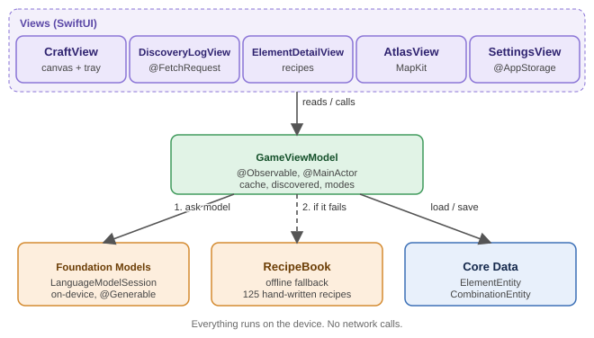
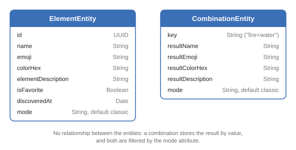
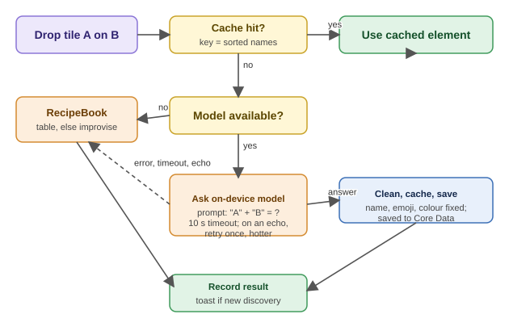
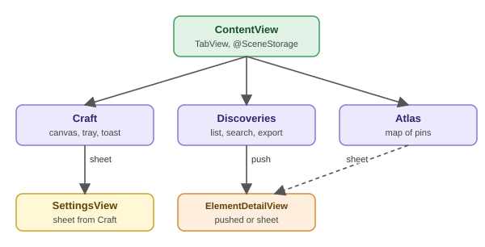
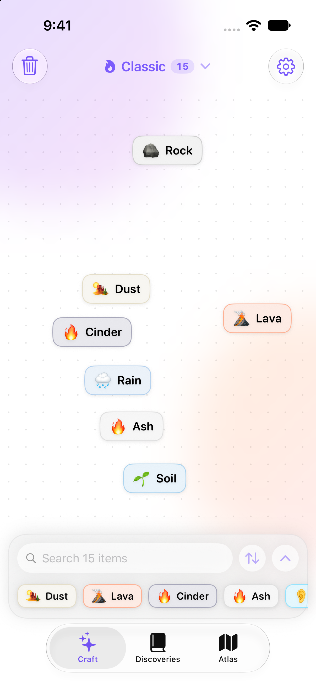
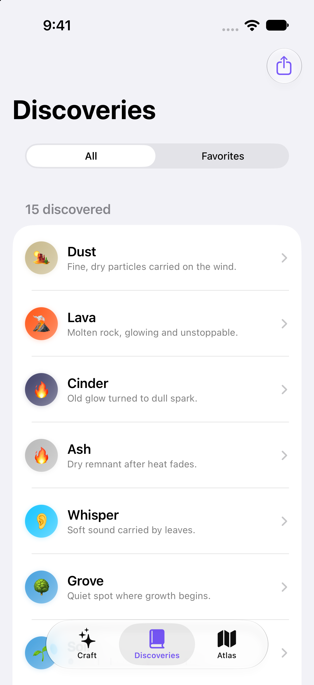
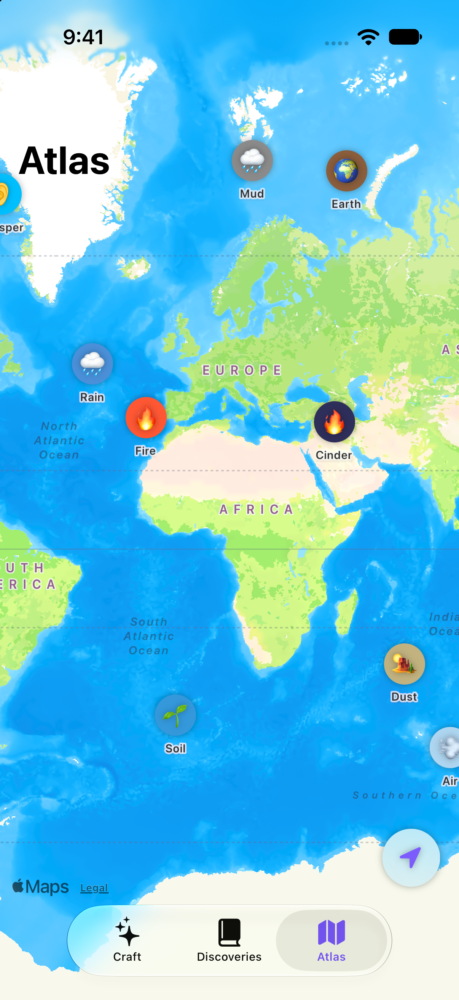
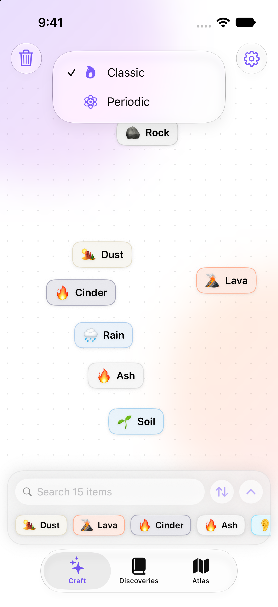
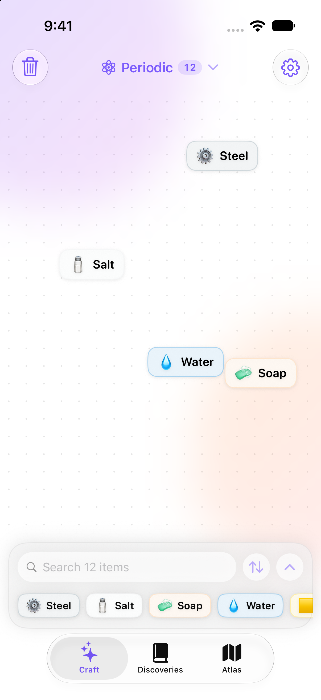
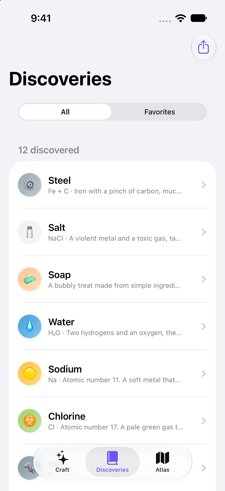

Element is an iOS crafting game in the style of Little Alchemy and Infinite Craft. The player drags two elements together and gets a new one. Past a small set of pinned starting recipes, every result is generated by Apple's on-device Foundation Models framework, so the game has no server, no API key and no network traffic.
This report describes how the app is built. SwiftUI draws a drag and drop canvas, a searchable discovery log and a map screen. One
@Observable view model owns the game state. A @Generable struct makes the model return a name, an emoji, a colour and a
description, and the app cleans each field before use. Core Data stores every discovered element and every generated combination, so a pair that has
been answered once is never asked again. If the model is unavailable, slow, or only repeats an input, a hand-written recipe book with 125 recipes answers
instead, and a combination never ends in an error. The app has two worlds, Classic and Periodic, each with its own prompt, starting elements and saved progress.
I did not measure the quality of the model's answers, and the project has no automated tests. The report says what the design guarantees and what it does not.
Keywords: iOS, SwiftUI, Foundation Models, on-device AI, Core Data, guided generation, crafting game.
Crafting games ask the player to combine two things and see what comes out. Little Alchemy [1] does this with a fixed list of recipes, so every player who mixes fire and water gets steam and every pair either has an answer or does not. Infinite Craft [2] removed that limit by letting a language model decide what a pair makes, so the game has no final element.
Until recently, a game like that needed a server. Each combination meant a request to a hosted model, which costs money per call and needs a network connection. Apple's Foundation Models framework in iOS 26 [3] gives apps direct access to the language model that runs on the device itself. An app can ask it questions without an API key, a backend or a connection.
I wanted to find out whether a crafting game in the style of Infinite Craft could run completely on the phone. That raises three questions:
Element started as a SwiftUI mini project in August 2026. A second round of work in October rebuilt the Craft screen in the style of Infinite Craft and added the offline fallback, and a third added the Periodic mode. The app has no backend and no third party dependencies. It uses only Apple frameworks and is about 2,700 lines of Swift in 16 files.
This report describes the design and the code as they stand in the repository [8]. The screenshots were taken in the iOS Simulator. I did not measure the quality of the model's answers, and the app has no automated tests. Section 7 says what that means for the results.
Running the model on the device has three practical effects for this project. There is nothing to host, so the app can be built and run from Xcode alone. There are no API keys or per-request costs. And a player's combinations never leave the phone, which is relevant because the app saves every pair they try.
The cost is that the app depends on Apple Intelligence. It needs a device or Simulator host that supports it, with the model downloaded. The app checks this at launch and says so on the Craft screen when the model is not ready (Section 4.6).
| Technology | Used for |
|---|---|
| Swift 5 and SwiftUI [4] | All screens, layout, gestures, animation and navigation |
| Foundation Models (iOS 26) [3] | On-device language model, LanguageModelSession, @Generable guided generation |
| Observation [5] | @Observable view model shared through the SwiftUI environment |
| Core Data [6] | Saving discovered elements and cached combinations; @FetchRequest for the log |
| MapKit [7] and Core Location | The Atlas map, pins, and the optional Locate Me button |
@AppStorage, @SceneStorage | Settings, selected tab, tray sort order and game mode |
os.Logger | Logging model failures that the game recovers from silently |
| Xcode 26, iOS 26.5 target | Build, Simulator and previews |
The project has no Swift packages. Dragging, haptics and animation use SwiftUI's own DragGesture,
sensoryFeedback and symbolEffect modifiers.
The app has three layers. SwiftUI views draw the screens and send the player's actions to one view model. The view model,
GameViewModel, owns the discovered elements and the combination cache, and decides where each answer comes from. Under it sit
three sources: the Foundation Models session, the offline RecipeBook, and Core Data.

The view model is the single source of truth for game state. Views that only need the current list read it from the environment.
The Discoveries tab is the exception: it reads Core Data directly through @FetchRequest, which keeps the list in sync
with the store without extra code.
| File | Lines | Role |
|---|---|---|
| CraftView.swift | 773 | Drag and drop canvas, tray, search and sort, merge animation, toast |
| GameViewModel.swift | 377 | State, combine pipeline, cache, Core Data reads and writes |
| RecipeBook.swift | 303 | Offline recipes and the rules for improvised results |
| GameMode.swift | 167 | Classic and Periodic: starting elements, pinned recipes, prompts |
| SettingsView.swift | 150 | Theme, game mode, AI creativity, reduce motion, reset |
| Element.swift | 141 | Element model, GeneratedElement, input cleaning |
| DiscoveryLogView.swift | 138 | Searchable log, favourites filter, JSON export |
| ElementDetailView.swift | 127 | One element, the recipes that make it and what it makes |
| ElementPill.swift | 116 | Emoji and name chip, FlowLayout for the expanded tray |
| ElementTile.swift, Blob.swift | 171 | Shared tiles, animated background shapes |
| AtlasView.swift, LocationManager.swift | 138 | Map screen and location permission |
| ContentView, ElementApp, Persistence | 105 | Tab container, app entry, Core Data stack |
Core Data holds two entities. ElementEntity is one discovered element. CombinationEntity is one cached pair
and what it produced. The cache key is the two names, lowercased and sorted, joined with a plus sign, so Fire + Water and Water + Fire share
one entry. Both entities carry a mode attribute, which is how Classic and Periodic keep separate progress in one store.

In memory the app uses a plain Element struct that is Codable, Hashable and compared by lowercased name.
That is what the UI sees, so no view touches a managed object directly except the Discoveries list.
A GameMode value bundles everything that differs between the two worlds. Switching mode saves the choice to
UserDefaults, clears the in-memory cache, and reloads the elements and combinations for the new mode from Core Data.
Progress in the other mode is not touched.
| Classic | Periodic | |
|---|---|---|
| Starting elements | Fire, Water, Earth, Air | Hydrogen, Oxygen, Carbon, Nitrogen, Sodium, Chlorine, Iron, Sulfur |
| Pinned recipes | 6 (Fire + Water = Steam, Water + Earth = Plant, ...) | 8 (Hydrogen + Oxygen = Water, Sodium + Chlorine = Salt, Iron + Carbon = Steel, ...) |
| Offline recipes | 93 | 32 |
| Prompt goal | The most obvious everyday result | A real compound, mineral, alloy or material |
| Description style | One playful sentence | Chemical formula first, then one short sentence |
| Discovery toast | NEW DISCOVERY | NEW COMPOUND |
| State | Mechanism | Why |
|---|---|---|
| Discovered elements, combination cache, mode | @Observable GameViewModel | Shared by every screen; single source of truth |
| Saved elements and combinations | Core Data | Must survive relaunch and be queried by mode |
| AI creativity, theme, reduce motion, tray sort | @AppStorage | Small settings that do not need a database |
| Selected tab | @SceneStorage | Only matters for the current scene |
| Tile positions, drag state, merges in flight | @State in CraftView | Where a tile sits has no meaning outside the screen |
When the player drops one tile on another, CraftView shows a pending chip and calls
combine(_:_:creativity:) on the view model. Figure 3 shows what happens next. The function always returns an element.

The prompt sent for every pair is only "Water" + "Earth" = ?. The instructions given to the session once, at creation, explain
the task and show examples. I copied the terse equation style from what people have worked out about how Infinite Craft phrases its own requests.
My comments in the code note that this framing pushes the model toward a short, literal answer and away from a creative-writing response.
The Classic instructions ask for "the single most obvious, common-sense result" and set four rules: prefer a single common noun, keep it general, never return an input unchanged, and use at most two words. They finish with seven worked examples such as Water + Earth = Plant and Fire + Fire = Inferno. The Periodic instructions ask for a real compound, molecule, mineral, alloy or material, with the everyday name in preference to a formula.
The model does not return free text. The app declares a @Generable struct, and the framework constrains the model's output to
that shape. Each field has a description that tells the model what to write.
@Generable
struct GeneratedElement {
@Guide(description: "A short, grounded name for the resulting element or concept (1-3 words). Never just repeat one of the two input names.")
var name: String
@Guide(description: "A single emoji that best represents this element.")
var emoji: String
@Guide(description: "A 6-digit hex color code (no #) that fits the element's theme, e.g. 'FF5733'.")
var colorHex: String
@Guide(description: "A one-sentence, playful description of the element.")
var description: String
}The fields are in a deliberate order, because later fields can depend on earlier ones in the same pass. The name comes first, so the emoji, colour and description are all chosen to match it.
A structured answer is still not a trusted one, so Element(generated:) normalises every field before the app uses it.
Only answers that came from the model are cached and saved. When the same pair comes up again, in this session or a later one, the saved result is returned immediately and the model is not asked. At startup each mode also writes its pinned recipes into the cache, but only for pairs that are not already there. These pairs, such as Fire + Water = Steam, are the first ones any player tries, and they should give the same answer every time.
The model can be unavailable, slow, or wrong. GameViewModel reads SystemLanguageModel.default.availability once at launch and
turns each unavailable reason into a message for the player: the device is not eligible, Apple Intelligence is off, or the model is still downloading.
While the model is unavailable the Craft screen shows a banner with that message, and every combination goes straight to the recipe book.
| Situation | Behaviour |
|---|---|
| Model unavailable at launch | Banner explains why; RecipeBook answers every pair |
| Model takes more than 10 seconds | The request is cancelled and RecipeBook answers |
| Model throws an error | The error is logged with os.Logger and RecipeBook answers |
| Model returns one of the two inputs | One retry at a temperature of at least 1.0, then RecipeBook |
| Player switches mode during generation | Result is returned to the tile but not filed under the new mode |
| Result already discovered | The existing element is reused and no toast appears |
| Fallback answered | Not cached, so the model gets another try at that pair later |
RecipeBook holds 125 hand-written recipes (93 Classic, 32 Periodic). For any other pair it improvises. In Classic, one input lends
an adjective and the other is the noun, which gives results such as "Flying Lava" or "Living Stone". The adjective comes from a small table of traits,
so fire-like words give "Burning" and plant-like words give "Living". Two identical inputs get a prefix such as "Giant". In Periodic, two metals make
an alloy and anything else becomes a compound named after its parts. The result's colour is the average of the two parents' colours.
The player can start several combinations before the first finishes, so the view model keeps a counter of pending requests, not a flag.
A LanguageModelSession keeps a transcript that grows with each request, and one session cannot serve two requests at once.
Each combination therefore gets its own single-use session. The next one is created and prewarmed in advance, so the first token arrives sooner.
| Setting | Temperature | Intent |
|---|---|---|
| Grounded | 0.4 | Stick to the most obvious result |
| Balanced (default) | 0.8 | Mostly expected, occasionally surprising |
| Wild | 1.3 | More original, less predictable |
ContentView is a tab bar with three tabs. Settings opens as a sheet from the Craft screen. The selected tab is remembered with
@SceneStorage.

Craft is the main screen and is laid out like Infinite Craft. The top bar has a clear-canvas button, a mode menu showing the current mode and the number of elements found, and a settings button. The middle is a dotted canvas, and the bottom is a tray of everything discovered.
| Gesture | Result |
|---|---|
| Tap a tray element | Places it on the canvas |
| Press and hold a tray element, then drag | Lifts it out of the tray; dropping it on a tile combines them |
| Drag a tile onto another tile | Combines them; the result appears where the target was |
| Double-tap a tile | Duplicates it (useful for Fire + Fire) |
| Drag a tile into the tray | Removes it from the canvas |
| Expand, search or sort the tray | Full wrapping grid, name filter, newest, name or emoji order |
Native onDrag and onDrop did not trigger reliably on iPhone-sized touch input, so the screen uses a plain
DragGesture. Tray tiles need a short press of 0.2 seconds before they drag, so an ordinary swipe still scrolls the tray. A drag
remembers its starting position, so a tile moves with the finger and does not jump to the touch point. The tile nearest to the drop point is the target,
and it is highlighted while the finger is over it.
A first-time discovery shows a toast at the top with the two parents and the result, plays a burst at the spot where the element appeared, and gives a haptic. The toast hides after 2.5 seconds or when tapped.
The log lists every element found in the current mode, newest first. It can be searched, filtered to favourites, and swiped to favourite or unfavourite an element. The share button exports the visible elements as pretty-printed JSON with ISO 8601 dates. The detail page shows a large badge, the description, the time of discovery, the recipes that make the element and the recipes that use it. Those recipes are read from the cache and resolved back to discovered elements, so the page never lists a recipe the player has not seen the parts of.
The Atlas puts a pin for every discovered element on a world map. The position comes from the element's name, which is hashed with FNV-1a and
mapped to a latitude between -80 and 80 and a longitude between -170 and 170. I used FNV-1a and not Swift's Hasher because
Hasher is seeded randomly on each launch, and a pin should be in the same place every time. The map is decorative. A Locate Me button asks for
when-in-use location permission and adds a marker for the player. The permission text says the location is cosmetic and that no gameplay data is sent anywhere.
Settings has a theme picker (system, light, dark), the game mode, the AI creativity level, a reduce motion switch, and a reset button with a confirmation. Reset deletes the elements and combinations of the current mode only. With reduce motion on, the spring animations on the canvas become short linear ones and the wiggling hint icon stops. Controls such as the mode menu, search clear button and sort button have accessibility labels, and the mode menu announces how many elements are discovered.
The Classic screens are below: the Craft canvas with fifteen elements, the Discoveries log, and the Atlas.



The mode menu and the Periodic world are shown next. In Periodic mode the player starts with eight real elements, and the descriptions begin with the symbol or formula.



| Date | Change |
|---|---|
| 25 Aug 2026 | First version: combination game with on-device generation, Craft, Discoveries and Atlas tabs, Core Data persistence, README |
| 12 Oct 2026 | Craft screen reworked in the style of Infinite Craft; offline RecipeBook added; fallback results no longer cached |
| 21 Oct 2026 | Periodic game mode added alongside Classic, with separate progress per mode |
I did not run a benchmark, so I do not report response times or answer accuracy. What I can state comes from how the code is built.
A combination always produces an element, because every failure path ends in RecipeBook, which does not fail. A repeated pair is answered
from the cache without the model. A pair entered in either order gives the same result, because the cache key is sorted. Progress survives relaunch, because
every new element and cached combination is saved as it is created. And the Classic and Periodic worlds cannot overwrite each other, because every fetch
and every delete is filtered by mode.
RecipeBook are pure functions and would be the first things to cover.GameMode structure, and a way to share or import a discovery log.Element is a crafting game where the model decides what two things make, and all of it runs on the phone. Guided generation turns the model's reply into a name, emoji, colour and description that the interface can use directly. A cache and a set of pinned recipes keep the early game consistent, and a hand-written fallback means the player never meets an error. Core Data keeps every discovery, and each of the two worlds has its own saved progress.
The main limits are that it needs Apple Intelligence hardware, that answer quality was not measured, and that there are no automated tests. The first thing I would add is a test target for the cache and the fallback rules.
You combine two words according to their real-world meaning, like a crafting game. Answer with the single most obvious, common-sense result, the one almost anyone would guess first. Not the most original, clever, or unexpected one. Rules: - Prefer a single common noun. Avoid adjectives. - Keep it general and simple, not hyper-specific. - Never answer with either input word unchanged. - Two words maximum. Examples: - "Water" + "Earth" = "Plant" - "Fire" + "Water" = "Steam" - "Fire" + "Earth" = "Lava" - "Water" + "Air" = "Rain" - "Fire" + "Air" = "Smoke" - "Earth" + "Air" = "Dust" - "Fire" + "Fire" = "Inferno" Also pick a single emoji and a hex color that fit the result.
func combine(_ a: Element, _ b: Element, creativity: AICreativity) async -> CombineOutcome {
let key = cacheKey(for: a, b) // sorted, lowercased names
let startMode = mode
if let cached = cache[key] { return record(cached, from: a, b) }
pendingCount += 1
defer { pendingCount -= 1 }
let generated = await generate(a, b, creativity: creativity, in: startMode)
let made = generated ?? RecipeBook.combine(a, b, mode: startMode)
guard startMode == mode else { return CombineOutcome(element: made, isNew: false) }
let result = existing(named: made.name) ?? made
if generated != nil { // only model answers are cached
cache[key] = result
persistCombination(key: key, result: result)
}
return record(result, from: a, b)
}[1] Recloak, "Little Alchemy," https://littlealchemy.com.
[2] N. Agarwal, "Infinite Craft," https://neal.fun/infinite-craft/.
[3] Apple Inc., "Foundation Models," Apple Developer Documentation, https://developer.apple.com/documentation/foundationmodels.
[4] Apple Inc., "SwiftUI," Apple Developer Documentation, https://developer.apple.com/documentation/swiftui.
[5] Apple Inc., "Observation," Apple Developer Documentation, https://developer.apple.com/documentation/observation.
[6] Apple Inc., "Core Data," Apple Developer Documentation, https://developer.apple.com/documentation/coredata.
[7] Apple Inc., "MapKit," Apple Developer Documentation, https://developer.apple.com/documentation/mapkit.
[8] P. Mistry, "Element," https://github.com/altf4-games/Element.